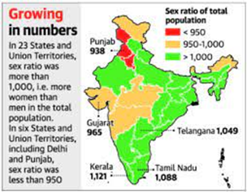
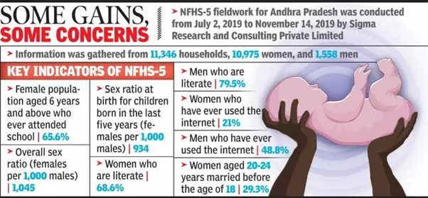
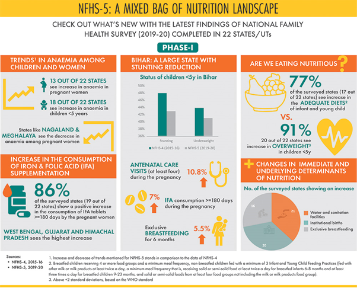
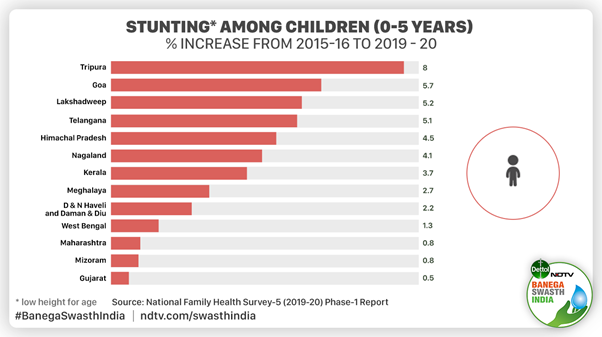

Ministry of Health and Family Welfare (MoHFW)
National Family Health Survey (NFHS) 5: Key Takeaways
Relevant to Central CSR Team, Tech Mahindra Foundation, State Champions
The National Family Health Survey (NFHS) is a large-scale, multi-round survey conducted in a representative sample of households throughout India.
-
Conducted by
- The Ministry of Health and Family Welfare (MoHFW) has designated the International Institute for Population Sciences (IIPS) Mumbai, as the nodal agency for providing coordination and technical guidance for the survey.
- IIPS collaborates with a number of Field Organizations (FO) for survey implementation.
-
Goals - Each successive round of the NFHS has had two specific goals:
- To provide essential data on health and family welfare needed by the Ministry of Health and Family Welfare and other agencies for policy and programme purposes.
- To provide information on important emerging health and family welfare issues.
-
The survey provides state and national information for India on:
- Fertility
- Infant and child mortality
- The practice of family planning
- Maternal and child health
- Reproductive health
- Nutrition
- Anaemia
- Utilization and quality of health and family planning services.
Funding
-
The funding for different rounds of NFHS has been provided by USAID, the Bill and Melinda Gates Foundation, UNICEF, UNFPA, and MoHFW (Government of India).
History of NFHS
-
Objective: The main objective of each successive round of the NFHS has been to provide high-quality data on health and family welfare and emerging issues in this area.
- NFHS-1: The NFHS-1 was conducted in 1992-93.
- NFHS-2: The NFHS-2 was conducted in 1998-99 in all 26 states of India.
- The project was funded by the USAID, with additional support from UNICEF.
- NFHS-3: The NFHS-3 was carried out in 2005-2006.
- NFHS-3 funding was provided by the USAID, the Department for International Development (UK), the Bill and Melinda Gates Foundation, UNICEF, UNFPA, and the Government of India.
- NFHS-4: The NFHS-4 in 2014-2015.
-
In addition to the 29 states, NFHS-4 included all six union territories for the first time and provided estimates of most indicators at the district level for all 640 districts in the country as per the 2011 census.
-
The survey covered a range of health-related issues, including fertility, infant and child mortality, maternal and child health, perinatal mortality, adolescent reproductive health, high-risk sexual behaviour, safe injections, tuberculosis, and malaria, non-communicable diseases, domestic violence, HIV knowledge, and attitudes toward people living with HIV.
National Family Health Survey-5
-
The NFHS-5 has captured the data during 2019-20 and has been conducted in around 6.1 lakh households.
-
Many indicators of NFHS-5 are similar to those of NFHS-4, carried out in 2015-16 to make possible comparisons over time.
-
Phase 2 of the survey (covering remaining states) was delayed due to the Covid-19 pandemic and its results were released in September 2021.
-
NFHS-5 data will be useful in setting benchmarks and examining the progress the health sector has made over time.
-
Besides providing evidence for the effectiveness of ongoing programmes, the data from NFHS-5 help in identifying the need for new programmes with an area specific focus and identifying groups that are most in need of essential services.
-
It provides an indicator for tracking 30 Sustainable Development Goals (SDGs) that the country aims to achieve by 2030.
-
NFHS-5 includes some new topics, such as preschool education, disability, access to a toilet facility, death registration, bathing practices during menstruation, and methods and reasons for abortion.
-
NFHS-5 includes new focal areas that will give requisite input for strengthening existing programmes and evolving new strategies for policy intervention. The areas are:
- Expanded domains of child immunization
-
Components of micro-nutrients to children
-
Menstrual hygiene
-
Frequency of alcohol and tobacco use
-
Additional components of non-communicable diseases (NCDs)
-
Expanded age ranges for measuring hypertension and diabetes among all aged 15 years and above.
-
In 2019, for the first time, the NFHS-5 sought details on the percentage of women and men who have ever used the Internet.
History of NFHS
-
Sex Ratio: NFHS-5 data shows that there were 1,020 women for 1000 men in the country in 2019-2021. This is the highest sex ratio for any NFHS survey as well as since the first modern synchronous census conducted in 1881. In the 2005-06 NFHS, the sex ratio was 1,000 or women and men were equal in number.
-
Sex Ratio at Birth: For the first time in India, between 2019-21, there were 1,020 adult women per 1,000 men. However, the data shall not undermine the fact that India still has a sex ratio at birth (SRB) more skewed towards boys than the natural SRB (which is 952 girls per 1000 boys).
-
Uttar Pradesh, Haryana, Punjab, Rajasthan, Bihar, Delhi, Jharkhand, Andhra Pradesh, Tamil Nadu, Odisha, Maharashtra are the major states with low SRB.
-
Total Fertility Rate (TFR): The TFR has also come down below the threshold at which the population is expected to replace itself from one generation to next. TFR was 2 in 2019-2021, just below the replacement fertility rate of 2.1.
-
In rural areas, the TFR is still 2.1.
-
In urban areas, TFR had gone below the replacement fertility rate in the 2015-16 NFHS itself.
-
A decline in TFR, which implies that a lower number of children are being born, also entails that India’s population would become older.
-
The survey shows that the share of under-15 population in the country has therefore further declined from 28.6% in 2015-16 to 26.5% in 2019-21.
-
Children’s Nutrition: Child Nutrition indicators show a slight improvement at all-India level as Stunting has declined from 38% to 36%, wasting from 21% to 19% and underweight from 36% to 32% at all India level.
-
In all phase-II States/UTs the situation has improved in respect of child nutrition, but the change is not significant as drastic changes in respect of these indicators are unlikely in a short span period.
-
The share of overweight children has increased from 2.1% to 3.4%.
-
Anaemia: The incidence of anaemia in under-5 children (from 58.6 to 67%), women (53.1 to 57%) and men (22.7 to 25%) has worsened in all States of India (20%-40% incidence is considered moderate).
-
Barring Kerala (at 39.4%), all States are in the “severe” category.
-
Immunization: Full immunization drive among children aged 12-23 months has recorded substantial improvement from 62% to 76% at all-India level.
-
11 out of 14 States/UTs have more than three-fourth of children aged 12-23 months with fully immunization and it is highest (90%) for Odisha.
-
Institutional Births:
Institutional births have increased substantially from 79% to 89% at all-India Level.
-
Institutional delivery is 100% in Puducherry and Tamil Nadu and more than 90% in 7 States/UTs out of 12 Phase II States/UTs.
-
Along with an increase in institutional births, there has also been a substantial increase in C-section deliveries in many States/UTs especially in private health facilities.
-
It calls into question unethical practices of private health providers who prioritise monetary gain over women’s health and control over their bodies.
-
Family Planning:
Overall Contraceptive Prevalence Rate (CPR) has increased substantially from 54% to 67% at all-India level and in almost all Phase-II States/UTs with the exception of Punjab.
-
Use of modern methods of contraceptives has also increased in almost all States/UTs.
-
Unmet needs of family Planning have witnessed a significant decline from13% to 9% at all-India level and in most of the Phase-II States/UTs.
-
The unmet need for spacing which remained a major issue in India in the past has come down to less than 10% in all the States except Jharkhand (12%), Arunachal Pradesh (13%) and Uttar Pradesh (13%).
-
Breastfeeding to Children's:
Exclusive breastfeeding to children under age 6 months has shown an improvement in all-India level from 55% in 2015-16 to 64% in 2019-21. All the phase-II States/UTs are also showing considerable progress.
-
Women Empowerment:
Women's empowerment indicators portray considerable improvement at all India level and across all the phase-II States/UTs.
-
Significant progress has been recorded between NFHS-4 and NFHS-5 in regard to women operating bank accounts from 53% to 79% at all-India level.
-
More than 70% of women in every state and UTs in the second phase have operational bank accounts.



